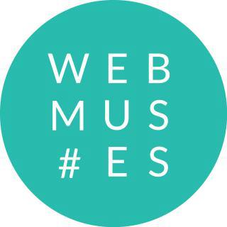

Cześć Kraków!
Rails Girls goes Krakow AGAIN: join the two-day bake off to the exciting world of building web applications with Ruby on Rails, with some jam-making action with fellow Railsberry attendees.
Applications will be open soon!
You learn designing, prototyping and coding with the help from our coaches.
You need your own laptop, curiosity and a sprinkle of imagination!
Want to help? We are looking for sponsors and speakers! Email us.
| 18.00 - |
Installation partyGet know the attendees a little bit before hand. Bring your laptop if you can, so we can install Ruby on Rails for you. |
|---|
| 9:00 - 10:00 |
Registration, coffee and installation festDuring the morning we’ll install Ruby on Rails on your computer, if there has been problems before, get to know each other and have some coffee. |
|---|---|
| 10:00 - 10:15 |
WelcomeOutline of the day & word from sponsors. |
| 10:20 - 10:45 |
Designing your web app - workshop |
| 10:50 - 11:10 |
Tryruby.orgLet's get coding! |
| 11:10 - 13:00 |
WORKSHOPJumpstart your first web application |
| 13:00 - 13:30 |
Lunch |
| 13:30 - 14:30 |
Lightning TalksBentobox. Recap of what we’ve learned and how it all fits together. |
| 14:30 - 16:00 |
WORKSHOPExtend our application. |
| 16:30 - 17:00 |
Lightning talksPawel Brodzinski |
| 21:00 - |
AfterpartyMixed with Railsberry Preparty. Open for everyone, meet cool people interested in tech. |
Applications open: March 1st
Applications close: April 1st
Acceptances informed: April 3rd
Rails Girls Kraków is co-organized with our awesome partners.
Want to help? We're looking for sponsors!
Railsberry 2013 is a conference for curious Rails developers. It's where (love for) science meets magic. And it's all about mixing flavours and technologies and focusing on things you never played with.
Lunar Logic was Poland's first Rails shop. They've been at the heart of the Rails community in Poland since 2005. They're thrilled to be able to help RailsGirls introduce more people to the lovely land that is Rails.
 Applicake is our friend when it comes to application architecture design, development and maintenance. They love well-written code, playing with APIs and modern browsers. Why we love them? Check out their crazy projects.
Applicake is our friend when it comes to application architecture design, development and maintenance. They love well-written code, playing with APIs and modern browsers. Why we love them? Check out their crazy projects.
WebMuses is a Krakow-based community brought into being to show women they can join IT world. Organizing workshops and events, evangelizing women (and not only) in the Web.
Mislav Marohnić's blog 6.5.2012
Rails Girls in Railsberry blog 15.2.2013
Gazeta.pl 18.4.2012
How much does the workshop cost? Nothing, it's free! You just need to be excited!
Who is this aimed for? Women of any age with basic knowledge of working with a computer. We’ve had people of all ages taking part. Speeches and workshops are in polish or english. Please bring your laptop.
Can men attend? Yes, but you need to be accompanied by an interested lady. Also, girls are given a priority.